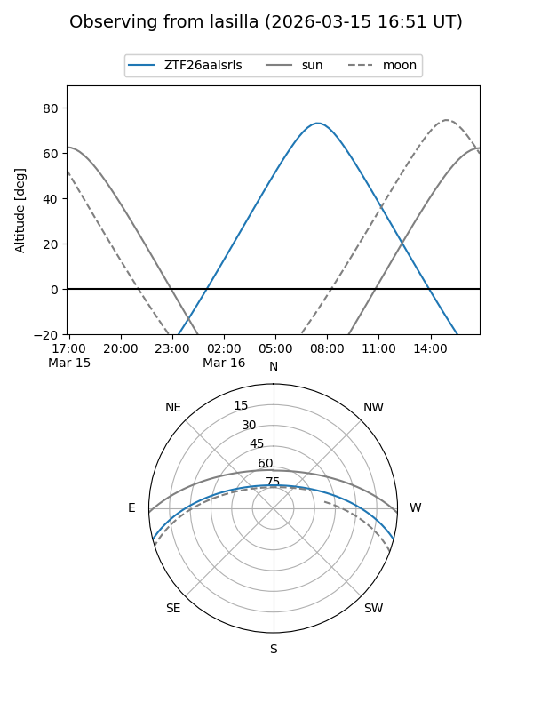
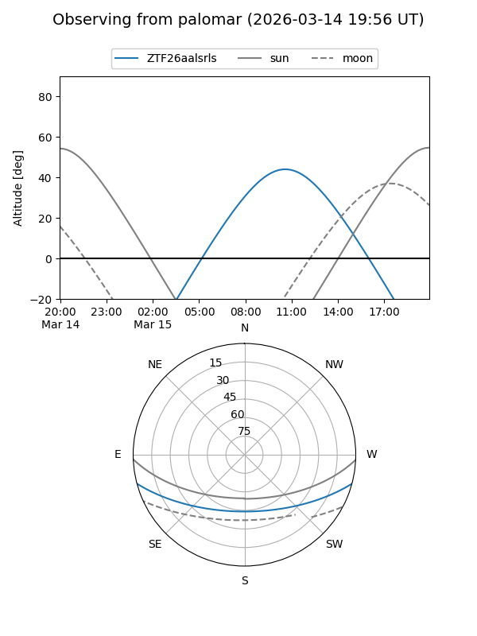
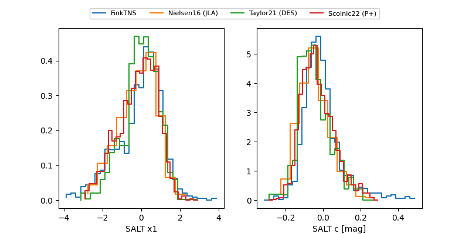

ZTF26aalsrls
Target ZTF26aalsrls at 2026-03-15 11:20
Aliases and brokers:
FINK: link
Lasair: link
ALeRCE: link
alt names
ZTF26aalsrls (ztf,fink_ztf)
Coordinates:
equatorial (ra, dec) = 214.7215,-12.44646
equatorial (HMS+DMS) = 14:18:53.17,-12:26:47.27
galactic (l, b) = (333.9364,+45.09624)
Flags:
Photometry:
last ztfg=19.96
1 ztfg detections
Lightcurve
Visibility


Additional plots
